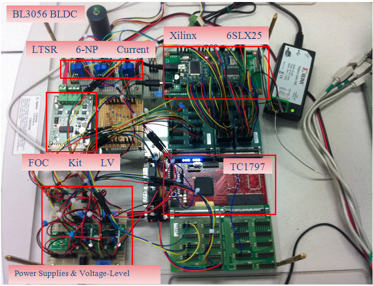

Our Projects


Motivation
Hardware-software partitioning has become a key issue in the design of embedded systems when performance constraints have to be met and chip area is critical. The designer has to decide to implement an application component in hardware or software to meet tight system constraints. It has been shown that efficient techniques for partitioning can achieve results in performance or power superior to software-only solution. The general hardware-software partitioning problem is known to be NP-complete. Therefore, developing an algorithm to achieve the optimal or near-optimal solution will be a significant contribution to both the engineering and academic fields.
CAPRI incorporates a number of multi-constraint aware hardware software partitioning strategies that can produce optimal/near optimal partitioning solutions.
Case Study: Accelerating EKF-based Sensorless Motor Control Algorithm
The Brushless DC (BLDC) motor is widely used in industrial, automotive and domestic applications as it offer numerous advantages e.g. high efficiency, maintainability, compact form, etc. Position and speed sensors are required to control BLDC motors as the current commutation is performed based on the rotor position. However, these sensors are undesirable from the standpoint of size, cost, maintenance, and reliability. Due to these reasons, techniques for sensorless BLDC motor control have attracted wide attention. This project aims to implement an Extended Kalman Filter (EKF) based sensorless motor control algorithm on the microprocessor to control a 3-phase BLDC motor.
Application profiling results on the EKF motor controller revealed that the timing constraint can be met if the most compute intensive function (i.e. Kalman gain computation) in the EKF motor controller is implemented as a hardware accelerator on FPGA. We have proposed an optimized FPGA implementation for Kalman gain computation. The proposed implementation overlaps the computation time with the data transfer time between the microprocessor and the FPGA, hence reducing the overall latency.
Hardware-software partitioning of EKF based sensorless motor control algorithm on the microprocessor-FPGA platform:

Publications
International Refereed Journals
- Wenjun Shi, Jigang Wu, Siew-Kei Lam, and Thambipillai Srikanthan, “Algorithms for Bi-objective Multiple-choice Hardware/Software Partitioning”, Computers and Electrical Engineering, Vol. 50, Issue C, February 2016, pp. 127-142 [PDF]
- Guiyuan Jiang, Jigang Wu, Siew-Kei Lam, Thambipillai Srikanthan and Jizhou Sun, “Algorithmic Aspects of Graph Reduction for Hardware/Software Partitioning”, Journal of Supercomputing, Vol. 71, No. 6, June 2015, pp. 2251-2274 [PDF]
- Yan Lin Aung, Siew-Kei Lam, and Thambipillai Srikanthan, “Addressing Productivity Challenges in Domain Specific Reconfigurable Platforms: A Case Study on EKF-based Motor Control”, Journal of Low Power Electronics, Vol. 10, No 3, September 2014, pp. 455-466
- Jigang Wu, Pu Wang, Siew-Kei Lam, Thambipillai Srikanthan, “Efficient Heuristic and Tabu Search for Hardware/Software Partitioning", The Journal of Supercomputing, Vol. 66, No. 1, October 2013, pp. 118-134 [PDF]
International Refereed Conferences/Workshops
- Kratika Garg, Yan Lin Aung, Siew-Kei Lam, and Thambipillai Srikanthan, "KnapSim - Run-time Efficient Hardware-Software Partitioning Technique for FPGA", IEEE International System-on-Chip Conference (SOCC), September 2015
- Wenjun Shi, Jigang Wu, Siew-Kei Lam, and Thambipillai Srikanthan, “Algorithmic Aspects for Bi-objective Multiple-choice Hardware/Software Partitioning”, International Symposium on Parallel Architectures, Algorithms and Programming (PAAP), July 2014, pp. 7-12
- Yan Lin Aung, Siew-Kei Lam and Thambipillai Srikanthan, “Hardware-Software Codesign of EKF-based Motor Control for Domain-Specific Reconfigurable Platform", 4th International Symposium on Electronic System Design (ISED), December 2013, pp. 93-97 [PDF]
- Yan Lin Aung, Siew-Kei Lam and Thambipillai Srikanthan, "Compiler-Assisted Technique for Rapid Performance Estimation of FPGA-Based Processors", IEEE International SoC Conference (SOCC), September 2011 [PDF]
- Aung Y.L., Siew-Kei Lam and Srikanthan T., “Performance Estimation Framework for FPGA-based Processors”, International Conference on Field-Programmable Technology (ICFPT), December 2010, pp. 413-416
- Prakash A., Siew-Kei Lam, Singh A.K. and Srikanthan T., “Rapid Design Exploration Framework for Application-Aware Customization of Soft Core Processors”, International Conference on Field Programmable Logic and Applications (FPL), August/September 2009, pp. 539-542